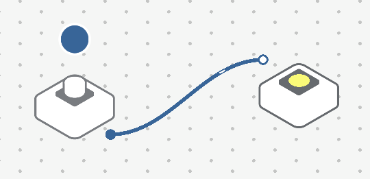
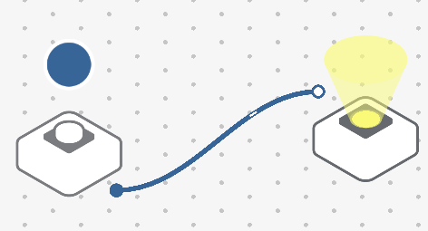

Ateliers Sam Labs¶
Qu’est-ce que Sam Labs ?¶
Sam Labs est un ensemble de blocs de programmation pour les 6 à 11 ans ayant chacun une fonction spécifique. Ils permettent d’apprendre les bases de la programmation en créant un circuit logique entre ceux-ci.
Les blocs sont disponibles en kit, ici est utilisé le Steam Kit.
Les blocs sont en deux catégories:
Entrés:
Bouton
Capteur de lumière
Curseur
Gyroscope
Proximité
Sorties:
LED RVB
Moteur DC
Sonnette
Servo-moteur
Sur le site officiel, on trouve des cours (uniquement en anglais): https://samlabs.com/us/content/steam
Avantages:¶
Il n’y a pas de connectique par câbles, les bloques fonctionnent en bluetooth. Les branchements sont effectués virtuellement sur ordinateur (qui doit avoir le bluetooth c’est un inconvénient) sur le logiciel en ligne ou hors ligne Sam Studio: https://studio.samlabs.com/ C’est pratique pour la voiture télécommandée, mais aussi pour expérimenter, il n’y a pas besoin de câbles à brancher et débrancher physiquement et cela permet d’ajouter des systèmes logiques intermédiaires. Par exemple si la luminosité est inférieure à 50 alors la LED RGB s’allume. On peut aussi ajouter des entrées depuis le clavier de l’ordinateur pour contrôler la voiture avec les flèches.
Inconvénients¶
Avoir un ordinateur avec le bluetooth, mais aussi recharger les blocs (45 minutes nécessaire), ils contiennent une batterie. Ils se rechargent en mini USB, il y a 3 câbles USB avec chacun 5 embouts mini USB permettant d’en recharger 15 en même temps. Quand le LED du bloc est allumée en rouge il se recharge, en bleu il est chargé. Pour le pairer (synchroniser) avec l’ordinateur, il faut appuyer sur le bouton sur le côte qui est difficile à presser. Il y a un gros inconvénient, ça ne marche pas toujours, il y a de nombreux blocs que je n’arrivais pas à pairer. Une fois pairé on le voit apparaitre dans l’interface Sam Lab, on peut le glisser dans l’espace de travail, il disparait alors de l’interface des outils disponibles pour éviter d’importer plusieurs fois le même. On peut aussi importer une infinité de blocs virtuels afin de les tester. Une fois la connexion établie entre les blocs sur ordinateur les appareils réagissent directement, il n’y a pas de bouton start sur lequel presser, la compilation est effectuée en temps réel.
Fonctionnement¶
La connexion¶
Les blocs sont connectés entre eux par bluetooth, une interface sur ordinateur appelé Sam Studio permet d’établir les connections.
Note
L’ordinateur doit avoir une connexion bluetooth.
Après chaque branchement virtuel, les blocs Samlabs réagissent instantanément, il n’y a pas de compilation à effectuer. On peut aussi utiliser des blocs virtuels pour effectuer les tests puis utiliser ceux connectés en bluetooth. Voici par exemple le branchement du bouton pour allumer une LED avec deux blocs virtuel:
On peut virtuellement appuyer sur le bouton en cliquant sur le cercle bleu au-dessus du bloc, on voit que le LED s’allume en jaune:
Certains blocs de sortie et noeuds logiques (montré plus bas) sont parfois réglables, il faut cliquer dessus puis sur l’icône de l’engrenage. Pour le LED on peut changer sa couleur:
Pour supprimer un bloc on le fait glisser en bas de l’interface en maintenant le bouton gauche enfoncé où on le sélectionne puis clic sur la croix.
Les systèmes logiques¶
On peut entre la connectique des blocs ajouter des conditions logiques. Par exemple avec une logique « inverser » la LED s’allume lorsque le bouton n’est pas pressé:

Un autre exemple, on peut allumer une lumière si la luminosité est faible en utilisant un capteur de lumière et une condition si la valeur est inférieure à un nombre défini puis le connecter à la LED RVB.

Note: La condition envoie un vraie (1) ou faux (0) donc va allumer la lumière à sa luminosité maximale ou complètement l’éteindre.
Module de LEGO et voiture¶
On peut mettre les blocs dans des modules de LEGO et ainsi les fixer dans des constructions LEGO. Un exemple de réalisation. On peut utiliser l’un des deux modules de voiture pour y fixer deux blocs DC Moteur sur chacun avec des roues et programmer les commandes de celles-ci.
Compatibilité¶
Le système est compatible avec les Micro:bit mais seulement en mode blocks (fonctionnement proche de Scratch). On peut par exemple utiliser le bouton du SamLabs pour afficher un message sur la Micro:bit.
Projets¶
La documentation donne des idées de projets avec le Steam kit, mais ils sont rédigés en anglais. Il y a des projets inspirants sur YouTube également avec les compétitions.
Prérequis:¶
Un des deux:
ordinateur portable avec une connexion internet au site Sam Studio et le bluetooth activé
tablette avec le bluetooth activé avecf le logiciel Sam Studio installé (disponible sur le Play Store)
Des blocs Sam Labs chargés (la recharge prend environ 45 minutes)
Introduction à Sam Studio¶
Depuis un ordinateur connecté il faut aller sur le site Sam Studio ou lancer l’application sur une tablette.
Pour créer un projet, il faut cliquer sur le + en haut à gauche, ensuite il faut choisir Sam Space (Sam Blockly va ouvrir une version avec des briques de code similaire à Scratch, cette version est plus difficile à utiliser.
L’interface de Sam Studio va apparaitre. Au centre il y a l’espace de travail où seront affichés les blocs Sam Labs et les différentes connexions qui permettront d’établir la logique du système.
En dessous sont affichées 3 catégories, il faudra faire un glisser-déposer de leur contenu dans l’espace de travail pour les ajouter.
Les catégories sont:
Entrées: les blocs qui permettent de déclencher des interactions
Sorties: les blocs qui sont la résultante de l’interaction
Comportement: des outils permettant de déterminer plus en détail l’interaction (si la luminosité est inférieure à un niveau donné alors, interagir)
Note
Vous pouvez avoir des détails sur ce que font les blocs en mettant la souris par-dessus.
Les blocs d’entrées et sorties sont des blocs virtuels, ils ne permettent pas de faire fonctionner les blocs physiques Sam Labs. Pour qu’ils fonctionnent cliquez en bas à gauche sur le cercle avec le + avec écrit en dessous « Connect ». Dans la fenêtre qui s’ouvre, cliquez sur « Connecter appareil ». Vous devez allumer un bloc Sam Labs, appuyez 3 secondes sur le bouton d’allumage dessus, il sera alors allumé en rouge pour indiquer qu’il n’est pas associé à Sam Studio. Dans Sam Studio cliquez sur Associer un appareil, vous devriez le voir apparaitre, sélectionnez-le puis cliquez sur « Associer ».
Note
Vous pouvez associer jusqu’à 6 blocs par projet.
Vous verrez le bloc apparaitre dans l’interface après quelques secondes. Pourle reconnaitre, il sera affiché tout à gauche dans la liste des boutons disponibles, avec des ombres dessus contrairement aux autres icônes. Si le bloc n’est pas visible, vérifiez que vous êtes dans la bonne catégorie entre Entrées et Sorties.
Vous pouvez le glisser dans l’espace de travail, il disparait ensuite des blocs disponibles, cela vous évite d’utiliser plusieurs fois le même bloc. Les blocs physiques sont automatiquement synchronisés. Si vous avez utilisé une entrée, vous devriez voir sa valeur changer, par exemple si vous avez utilisé un bouton, vous verrez dans l’interface lorsque vous appuyez dessus physiquement.
Associer un bloc de sortie comme un moteur DC par exemple et glissez-le dans l’espace de travail. Pour établir une connexion, reliez les points à côté des blocs. En reliant le bouton au moteur, il se mettra à tourner lorsque vous appuierez sur le bouton.
Note
Le bouton alterne entre une valeur 0 (quand vous n’appuyez pas) et 100 (quand vous appuyez). Avec une entrée de type Curseur vous pourrez utiliser les valeurs intermédiaires et moduler la vitesse à laquelle moteur tourne.
Dans Comportement vous pouvez ajouter une logique. Par exemple avec une connexion entre un bouton et LED RVB il faut rester appuyé sur le bouton pour que celle-ci s’allume. Pour faire fonctionner le bouton comme un interrupteur allez dans Comportements, dans Interrupteurs puis faites glisser le bouton Interrupteur au milieu de la connexion:
Les blocs ou comportements ont parfois des options, pour y accéder sélectionnez-le puis cliquez sur l’icône représentant un engrenage. S’il n’y pas d’engrenage c’est qu’il n’y a pas d’option de disponible. Pour la LED RVB vous pouvez changer sa couleur.
Projets¶
Véhicule LEGO¶
Réalisation d’un véhicule en LEGO contrôlable avec les touches de clavier de l’ordinateur.
Composants nécessaires par projet¶
2 moteurs DC
2 roues
1 sonnette
Des briques LEGO
Nombre de participants¶
2 groupes de 2 à 4 personnes (limité aux 4 moteurs du Steam Kit, donc 2 moteurs par groupe)
Temps nécessaire¶
30 minutes (5 si le véhicule est déjà prêt)
La partie programmation ne nécessite que 3 paramètres, le temps est surtout alloué à l’assemblage de la voiture, camion, formule 1, tricycle en LEGO.
Exemple de code à réaliser¶
Pour réaliser le véhicule LEGO on peut utiliser le Comportements > Mouvement > Contrôleur de véhicule. On le relie à 2 moteurs DC. Sur les moteurs il faut placer les roues SamLabs et les utiliser de préférence à l’avant du véhicule et à l’arrière les roues LEGO. Les flèches du clavier permettront de diriger la voiture. Si la voiture recule en appuyant sur flèche du haut, on peut inverser leur sens de rotation par défaut dans leurs options en cliquant dessus puis sur l’icône d’engrenage.
Véhicule autonome LEGO¶
Réalisation d’un véhicule en LEGO qui avance en permanence et s’arrête lorsqu’il détecte un obstacle.
Composants nécessaires par projet¶
2 moteurs DC
2 roues
1 détecteur de proximité
Des briques LEGO
Nombre de participants¶
2 groupes de 2 à 4 personnes (limité aux 4 moteurs Sam Labs dont 2 par groupe)
Temps nécessaire¶
30 minutes (5 si le véhicule est déjà prêt)
La partie programmation ne nécessite que 3 paramètres, le temps est surtout alloué à l’assemblage de la voiture, camion, formule 1, tricycle en LEGO.
Exemple de code à réaliser¶
L’entrée est un détecteur de proximité, le nombre augmente quand un obstacle se rapproche. Il faut utiliser une comparaison tant que le nombre et faible, que l’obstacle est éloigné les deux moteurs peuvent tourner, sinon ils s’arrêtent.
Le détecteur de proximité doit être monté à l’avant du véhicule est orienté à 90 degrés vers l’avant.
Feux de signalisation automatique¶
Création d’un feu de signalisation qui alterne entre le vert, orange et rouge.
Composants nécessaires par projet¶
1 LED RVB
Nombre de participants¶
2 groupes de 4 (2 LED RVB disponibles)
Temps nécessaire¶
40 minutes, le code peut être assez complexe pour un débutant.
Exemple de code à réaliser¶
On place un bouton virtuel puis un Comportements > Interrupteurs > Interrupteur, une appuie une fois sur le bouton virtuel pour mettre l’interrupteur sur On, puis on peut supprimé le bouton. On le connecte à un Comportements > Heure > Intervale, on peut régler le temps de chaque intervalle qui est par défaut à 1. Pour alterner entre les différentes couleurs, on utilise un compteur qui va aller de 0 à 2, chaque nombre sera comparé pour assigner une couleur. Le couleur se trouve dans Comportements > Nombres > Compteur, dans ses paramètres il doit être réglé de 0 à 2. On utilise trois comparaisons dans Comportements > Nombres > Comparer. Lorsque c’est égal à 0 on assigne la couleur verte dans Comportements > Couleurs > Couleur. Pour 1 le orange et pour 2 le rouge. On relie les trois bloques d’assignation de la couleur au bloc RVB.
Alarme de présence¶
Active une sonnette lorsqu’un obstacle est à proximité.
Composants nécessaires par projet¶
1 détecteur de proximité
1 sonnette
Nombre de participants¶
2 groupes de 2 personnes
Temps nécessaire¶
5 minutes.
Exemple de code à réaliser¶
En entrée il y a un détecteur de proximité puis un comparateur si l’obstacle est suffisamment proche, par exemple au-dessus de la valeur 60, alors la sonnette se mettra à sonner.
Lumière automatique¶
Une lumière qui s’allume automatiquement lorsque l’éclairage est sombre.
Composants nécessaires par projet¶
1 capteur de lumière
1 LED RVB
Nombre de participants¶
2 groupes de 2 personnes
Temps nécessaire¶
5 minutes.
Exemple de code à réaliser¶
L’entrée est un capteur de lumière, dessus est utilisé un comparateur pour allumer la lumière une fois que l’éclairage est suffisamment sombre (la nuit) donc inférieur à 20 par exemple alors la LED RVB s’allume.
Un chronomètre¶
Un chronomètre qui s’enclenche avec la touche espace du clavier et qui affiche les secondes qui s’incrémentent.
Composants nécessaires par projet¶
Aucun
Nombre de participants¶
6 maximum.
Temps nécessaire¶
10 minutes.
Exemple de code à réaliser¶
En entré on utilise la barre d’espace puis un Comportements > Interrupteurs > Interrupteur pour lancer ou mettre en pause le chronomètre. On connecte un Comportements > Heure > Intervale configuré à 1 seconde (c’est le paramètre par défaut). On le connecte à un Comportements > Nombre > Compteur. Pour remettre le chronomètre à 0 il faut mettre en pause celui-ci est dans compteur ouvrir ses paramètres et cliquer sur « Réinitialiser ».